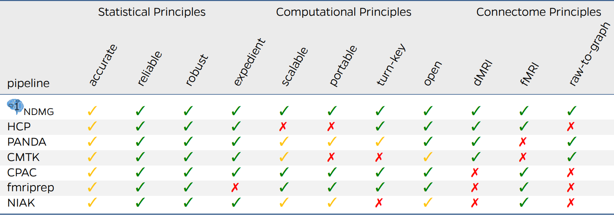
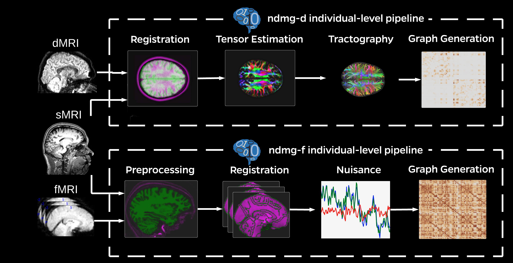
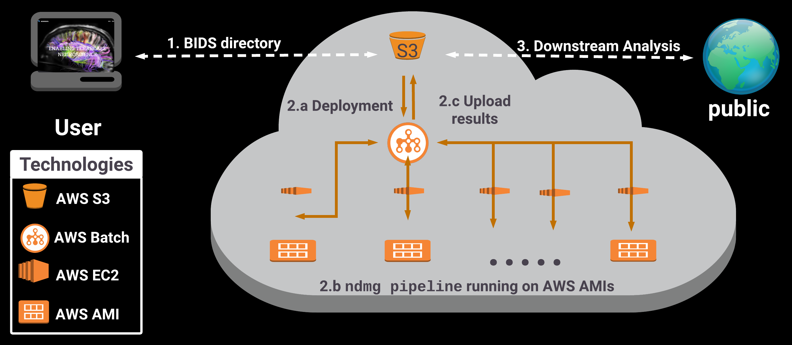
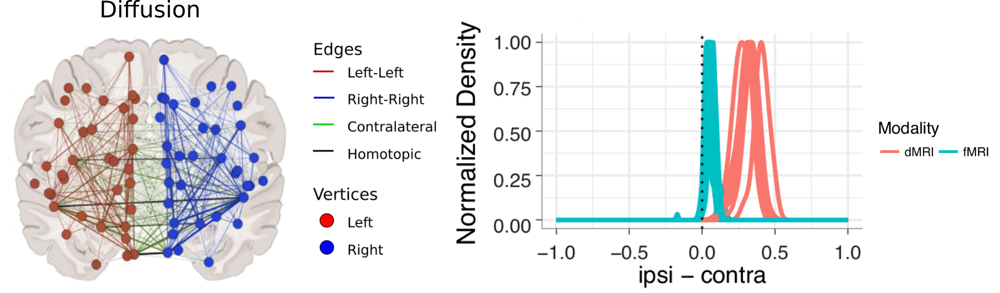
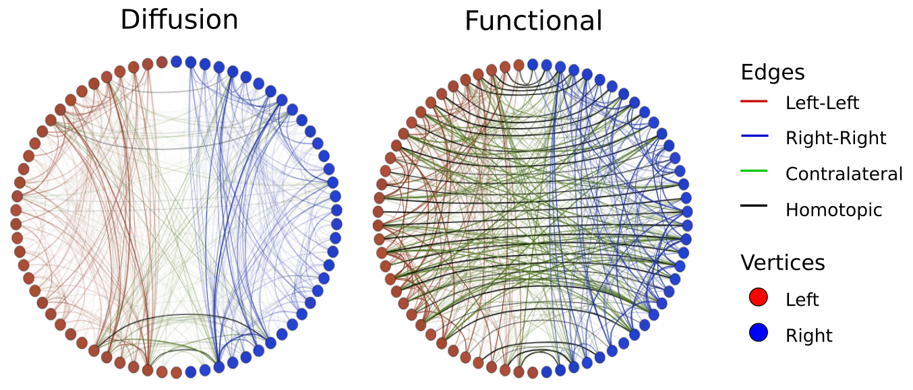
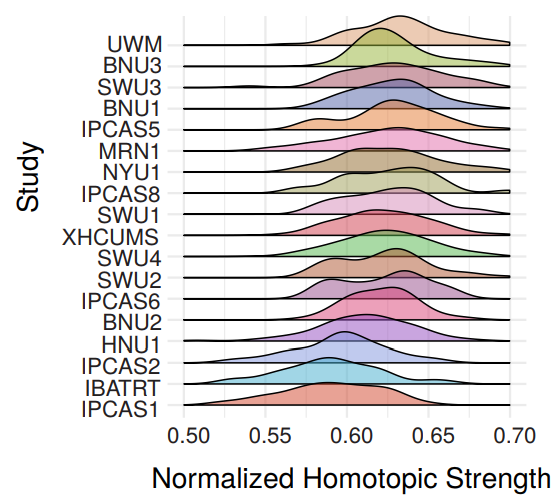

Multimodal MRI Imaging is Becoming Commonplace
- Multimodal MRI (M3R):dMRI, fMRI, sMRI
- Many open-access datasets:
- Consortium for Reliability and Reproducibility
- Human Connectome Project
- Healthy Brain Network
- No clinical brain imaging biomarkers for psychiatry
Processing and Analysis of Connectomes is Challenging
- sample sizes of single studies are relatively small
- data are heterogeneous within and across studies
- existing pipelines are customized per dataset
- lack of generative statistical network models
⇒ many failures to replicate
A Principled Approach for Connectomics

NDMG Fully Processes dMRI & fMRI

NDMG Scales in the Cloud

Ipsilateral/Homotopic Connections Seem Stronger than Contralateral/Heterotopic

A statistical model confirms these hypotheses for nearly every single scan across modalities

Yet, Magnitudes of Effects Exhibit Large Heterogeneity Within and Across Sites

Conditioning on Basic Demographics and Stuy Fails to Eliminate Heterogeneity
show plot here of density/histogram/rug/etc. of only site and demographic
NDMG: A Pipeline for Efficient Connectomics
- pipeline is hyper-parallelizable with AWS: ~1 hour per M3R, all running in parallel
- Compliant with best-practices of community to make generalizability trivial
- Docker, singularity, BIDS App, and AMI for ease of deployment across site
NDMG is Open Science
- ndmg codebase is open-source on github
- >6000 of connectomes online at neurodata.io
- extensive QA suite produced with each connectome
Meganalysis Demonstrates Troublesome Cross-Site Generalizability
- analysis trade-offs were required to achieve all goals
- data acquisition improvements possible remedy
Pipeline Improvements
- computationally efficient multi-tensor models and/or probabilistic tractography
- multiscale atlases
- more elaborate batch harmonization techniques
Data Acquisition Improvements
- deep phenotyping
- data acquisition harmonization
- quantitaive MRI
Acknowledgements
Joshua T. Vogelstein, Greg Kiar, Randal Burns, Xi-Nian Zuo, Vince Calhoun, Sephira Ryman, Rex Jung, Daniel Marguiles, Vikram Chandrashekhar, Disa Mehembere, Will Gray Roncal, Brian Caffo, Carey Priebe, Cameron Craddock, Michael Milham
Funding
DARPA {XDATA, SIMPLEX, GRAPHS}; NSF {NeuroNex}; NIH; Kavli
Questions?